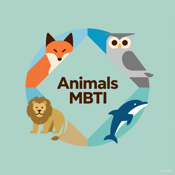

能量来源
独处思考，或在互动中汲取灵感？
E / I每个人都有自己的观察方式、思考节奏和生活偏好。通过 12 个轻松的日常情境，发现属于你的那份可能性。

不是把人装进四个字母，而是给理解自己多一组视角。
独处思考，或在互动中汲取灵感？
E / I眼前的具体事实，或背后的可能性？
S / N逻辑推理，或对人的影响与感受？
T / F有条理的规划，或开放灵活地探索？
J / P选择最贴近你的那一项。
以下比例只是本问卷所选选项的相对计分，不是人格强度、概率或心理测量置信度。
人格偏好会随情境、时间和经历表现出不同的一面。这个轻量级测试的作用，是为自我观察提供线索，而不是定义你是谁。
下一站：认识更多可能性这些只是帮助理解偏好的趣味角色。你可以在不同情境中呈现不同面向，无须被任何描述限制。